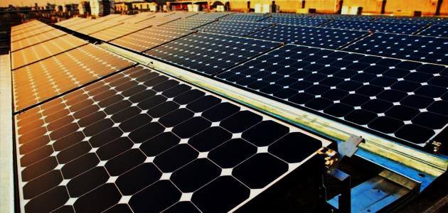

لخلايا الشمسية : الخلية الشمسية أو الخلية الضوئية أو الخلية الكهروضوئية (photovoltaicells) وتختصر ب(Pv cells) جميعها تشير إلى لوحة الكترونية يتم فيها تجميع بعض المواد التي لها القدرة على امتصاص الفوتونات الساقطة عليها من أشعة الشمس ومن ثم تحويلها إلى تيار كهربائي بالاستفادة من خصائص المواد المكونة لها كالسيلكون مثلا .
